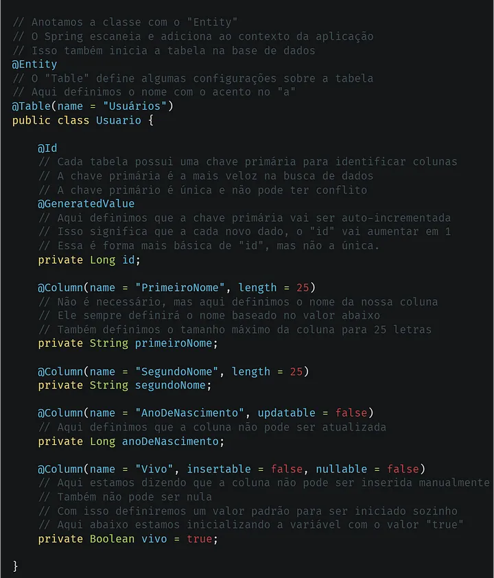
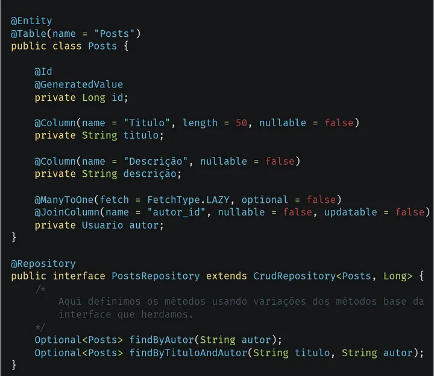

Criando uma API GraphQL com Java Spring Boot — Parte 3: Spring Data JPA
Nesse artigo vamos explorar a estrutura de dados da nossa API, e a sua comunicação com a base de dados.
Spring e Spring Boot JPA Logos.
SQL e ORMs
Structured Query Language (Linguagem de Consulta Estruturada), é a linguagem oficial das bases de dados relacionais, através de comandos presentes na linguagem, ela simplifica o gerenciamento das bases de dados, e providência uma controle abstrato importante na criação de centros de dados. Entretanto diferentes bases de dados relacionais possuem diferentes comandos e paradigmas, então para simplificar o uso desses comandos e facilitar o gerenciamento das bases de dados, foi se criado o ORM, Object Relational Mapping (Mapeamento de Objeto Relacional), com os ORMs a criação de tabelas foi simplificado através de um objeto, e os comandos SQL foram adaptados para métodos únicos e simples, os ORM providenciam uma padronização no sistema de consulta, e assim facilitam todo o processo de gerenciamento de dados.
Modelos e Entidades
Normalmente, uma base de dados necessita de organizar seus dados, e para isso as bases de dados relacionais possuem o sistema de tabelas, cada tabela possuí uma coluna, cada coluna possui um tipo de dado que pode ser aceito, com isso podemos escalar e criar sistema maiores e mais complexos, com múltiplas tabelas, e múltiplas colunas, cada uma segurando um ou mais dados de um tipo. Em termos de ORM a criação de tabelas e colunas são feitas através de objetos, no caso do Spring, através de Classes, essas classes definem a coluna, o tipo de dado, e outros como no exemplo abaixo.

Exemplo de criação de tabela e coluna com o Spring Data JPA
Relações Entre Tabelas
Uma das maiores diferenças entre bases de dados SQL, e não SQL, é a o sistema de relações entre tabelas, vamos super que tenhamos uma tabela de usuários e uma outra tabela de posts, cada usuário pode fazer vários posts, entretanto o post só pode ter um dono, que é um usuário, nessa ocasião temos uma relação OneToMany (UmPraVários) do lado do usuário, já que o mesmo pode se relacionar com vários posts, e no lado da tabela de posts, nós temos uma relação ManyToOne(VáriosPraUm), já que o post só pode ter relação com um único usuário, também existem relações OneToOne e ManyToMany, no exemplo criamos uma relação entre usuários e posts.

Exemplo de repositório com Spring Data JPA.
Construindo nossa aplicação
Primeiramente definiremos duas entidades, uma para usuários, e outra para tarefas, também definiremos uma relação bi-direcional entre ambos, com isso obteremos maneiras de filtrar a busca por tarefas de um determinado usuário de forma isolada, abaixo um exemplo de entidade do usuário.
Exemplo de entidade “Usuário” com Spring Data JPA.Exemplo de entidade “Tarefa” com Spring Data JPA.
Agora criaremos os repositórios da nossa aplicação.
Exemplo de repositório “Usuário” com Spring Data JPA.Exemplo de repositório “Tarefa” com Spring Data JPA.
Terminamos, como de costume, deixarei abaixo links que ajudaram ou estão relacionados ao tópico do artigo.